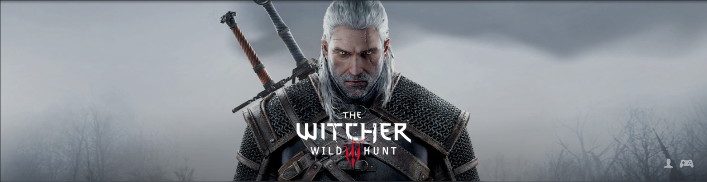

中文名
《巫师3：狂猎》
原版名称
《The Witcher 3: Wild Hunt》
其他名称
猎魔人3：狂猎
游戏平台
Xbox One 、PC 、PS4 、Switch
游戏类型
动作角色扮演(ARPG)
游戏语言
简繁体中文、英语、俄语、日语等
游戏画面
3D
分级
Mature
发行日期
2015年5月19日 （PC、PS4、XboxOne ）、
2019年10月13日 （Switch）
游戏简介
《侠盗猎车手5》（Grand Theft Auto V），是由Rockstar Games游戏公司出版发行的一款围绕犯罪为主题的开放式动作冒险游戏。本作于2013年9月17日登陆Play Station 3、Xbox 360平台，2014年11月18日登陆Play Station 4和Xbox ONE平台。多人模式《侠盗猎车手Online》于2013年10月1日正式开放。PC版本已于2015年4月14日推出 。
游戏背景
游戏背景洛圣都基于现实地区中的美国洛杉矶和加州南部制作，游戏拥有几乎与现实世界相同的世界观。玩家可扮演三位主角并在任意时刻进行切换（在做某些任务和在被通缉的时候不能切换），每位主角都有自己独特的人格与故事背景，以及交织的剧情。
游戏剧情
洛圣都，一个庞大且阳光普照的繁华都市，充满了自我救赎的大师们，贪官污吏们和落魄的名人们，一群被羡慕着的西方世界的居民却也正处于挣扎着生存的时代，衰落的经济和廉价的道义让这里混乱不堪。
面对滚滚而来的金融风暴，三个不同的怪咖绘制着自己生存和成功的蓝图。富兰克林是一个街头讨债者，寻找着真正的机遇和大笔的资金。麦克是一位名震四海的银行大盗兼职业犯罪者，金盆洗手之后他希望能过上更好的生活。崔佛是个变态的暴力狂和瘾君子，他驱动着无时不有的机会以及那辆载满了白粉的皮卡车。机缘巧合，他们走到了一起。为了自己想得到的一切，三人选择了一系列大胆而危险的犯罪行动。
游戏简介
《《巫师3：狂猎（The Witcher 3: Wild Hunt）》是由CD Projekt RED制作，WB Games（NA）、Spike Chunsoft（JP）发行的一款角色扮演类游戏，游戏于2015年5月19日在PC、PS4、XboxOne平台发行，2019年10月13日登录Switch平台。游戏自同名小说改编，为《巫师》系列游戏作品的第三部，是杰洛特冒险的终曲。
游戏背景
游戏延承了《猎魔人》系列小说的世界观。在小说故事发生前1500年前发生的一场灾难，不同的维度之间的世界发生了碰撞，世界直接被连接并互相渗透。这场灾难被称为“天球交汇”，它让很多来自各式各样来自不同世界中的生物被困在这个世界中，例如，食尸鬼和血棘尸魔和高阶吸血鬼，它们就是天球交汇所留下的残物。这些生物带有自己独特的生态，是过去时代的遗种。根据精灵的传说，人类因为自己之前的世界被毁灭，来到了这个世界。
人类的祖先学会了如何驾驭混沌之力，最早的人类法师从此诞生，并对抗着其他来自不同世界的生物。但由于怪物四处散布且难以击败，在普通人不具备与怪物对抗的情况下，猎魔人由此孕育而生，他们是专门被普通人雇佣来猎杀怪物的变种人类，并以此维持生计，保护人们不受怪物威胁。
游戏剧情
杰洛特恢复记忆后，开始四处寻找叶奈法的踪迹。最终，叶奈法联系了数年未见的杰洛特，请杰洛特前往威洛拜的村庄碰头。然而当杰洛特赶到约定地点时，整座村庄已经被大军夷为平地，叶奈法也不见踪迹。途中杰洛特碰见维瑟米尔，在他的帮助下一同追踪叶奈法的踪迹。在路途中，杰洛特梦见了凯尔莫罕的遭遇，梦境警示杰洛特他的养女希里遭遇了某种问题。
杰洛特一行于白果园驻留，叶奈法在白果园旅馆现身，身旁有尼弗迦德士兵护卫。这对旧情人尚未叙旧，叶奈法就坚决要求杰洛特尽快与她一同前往维吉马面见尼弗迦德皇帝。他们的队伍在途中遭遇狂猎袭击，但终归是抵达了目的地。在与尼弗迦德皇帝的会面中，杰洛特了解到希里已经从遥远的国度归来，正遭受生命危险，被狂猎追捕。
版权所有©LHT